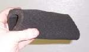
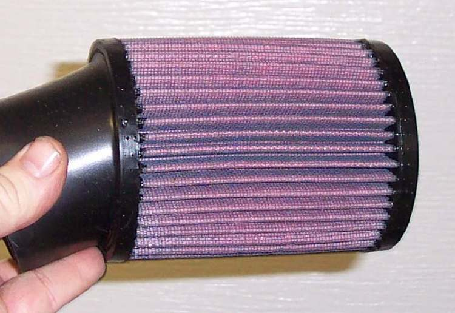
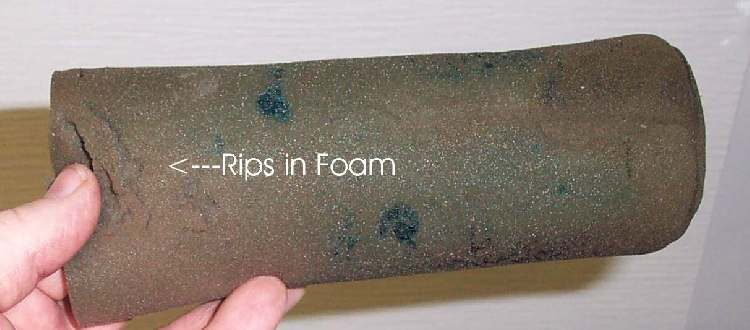
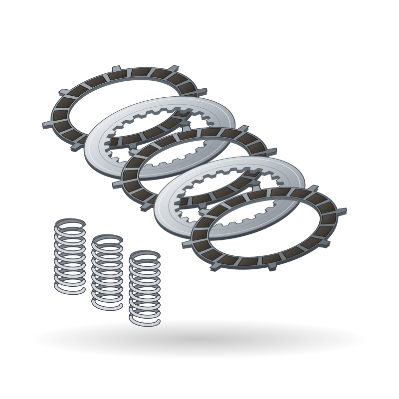

Spare parts / Harley-Davidson / Street Glide / Air filter
Harley-Davidson Street Glide air filter
Air filter for the Harley-Davidson Street Glide: when to replace it, what it costs, where to buy it and how to fit it.
 Illustration
IllustrationWorkshop photos




Where to buy
- Google ShoppingSearch results for this partgoogle.com ↗
- eBaySearch results for this partebay.com ↗
- AliExpressSearch results for this partaliexpress.com ↗
- AmazonSearch results for this partamazon.com ↗
- PartzillaOEM authorised dealer: 100k OEM parts in stockpartzilla.com ↗
- RevZillaAftermarket specialist: Chain kits, brake pads, tyres, batteries, gear for US big-bike ownersrevzilla.com ↗
- Twisted ThrottleAftermarket specialist: Adventure and touring parts (R1300GS, Africa Twin)twistedthrottle.com ↗
Check the part number for your model year before you buy. Genuine (OEM) parts first; good aftermarket parts are fine for wear items. Links open shop searches; Moto Zero earns nothing from them today and will say so here if that changes.
Fit it yourself
Fitment
| Model | Harley-Davidson Street Glide |
| Type | Touring |
| Engine | 1868-1923 cc |
| Final drive | Belt |
| Brakes | Disc |
| Main markets | US |
Questions
How often should I replace the air filter on a Harley-Davidson Street Glide?
As a guide, 5,000-12,000 km (dusty roads sooner). The owner's manual for your model wins, and riding on dusty roads, with a passenger or with heavy loads shortens it.
How much does a Harley-Davidson Street Glide air filter cost?
Typically US$ 4 to 50, depending on genuine or aftermarket and the shop. Prices are indicative.
Can I replace the air filter myself?
The job is rated 1 of 5 for difficulty. Follow the step-by-step guide and the values for your model.
More parts for the Harley-Davidson Street Glide
 Illustration
Illustration Illustration
Illustration Illustration
Illustration Illustration
Illustration Illustration
Illustration
IllustrationAll parts for the Harley-Davidson Street Glide → Air filter for other bikes →